Free, open source, still in beta · version 2.5.1
A new tab page for Chrome
I wanted a new tab page with my bookmarks and something nice to look at, so I made one. No account, no tracking.
The background on this page is the extension's own code, running live. Try the others:

Move your folders around
Drag a folder and you'll see where it will land. Fitted mode lines the rows up edge to edge.
Adjust tile size, spacing and board width in one panel. You can undo changes.

9 animated backgrounds
Pick one, change its colours or slow it down, or use your own picture or video. They're capped at 30 frames a second, so they stay light, and they can follow the time of day where you are.
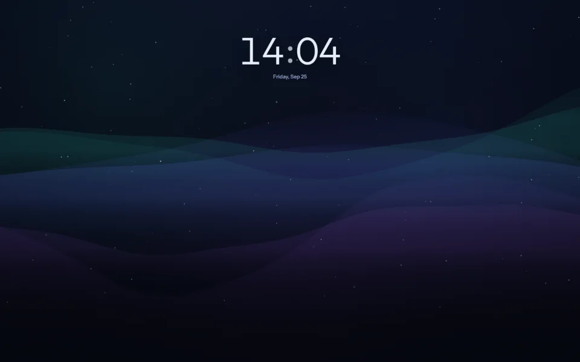
Nordlys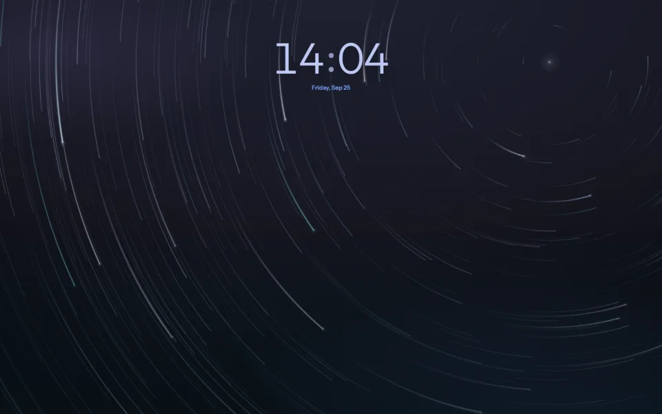
Polaris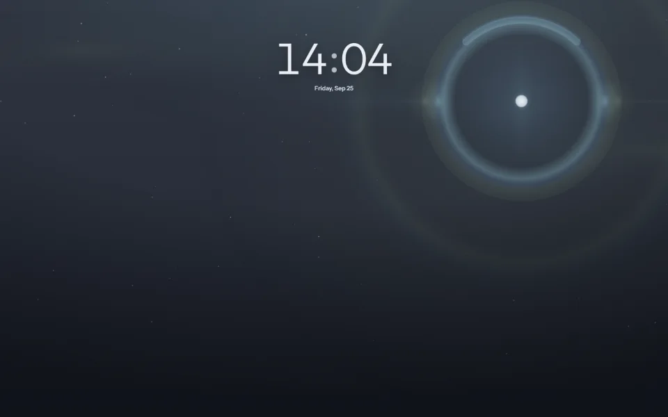
Halo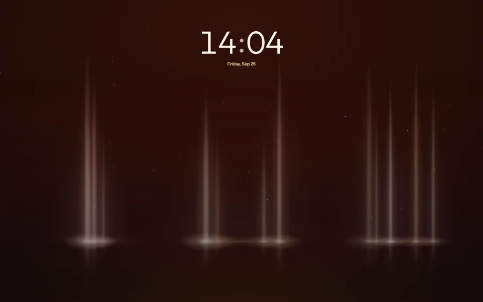
Pillars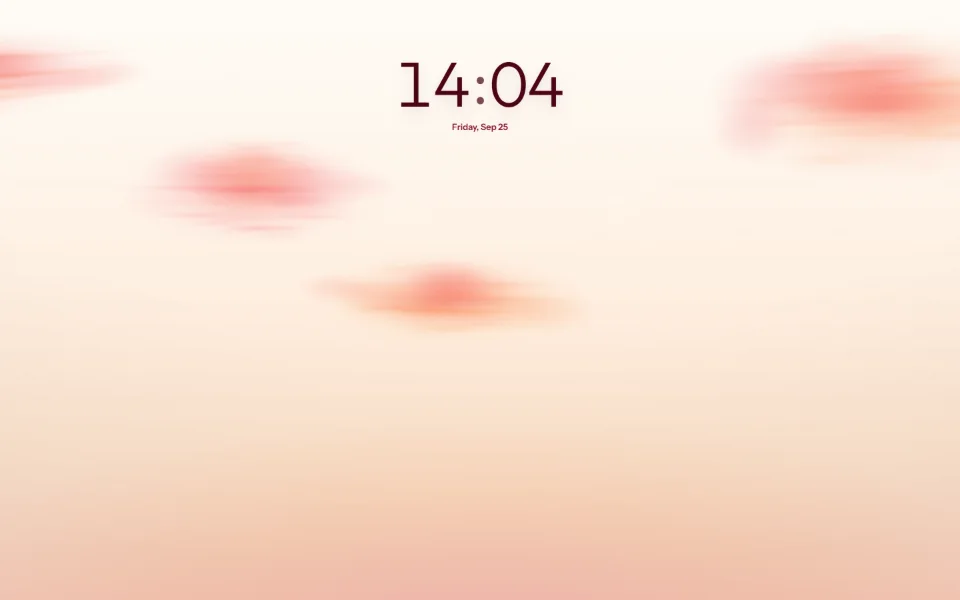
Nacre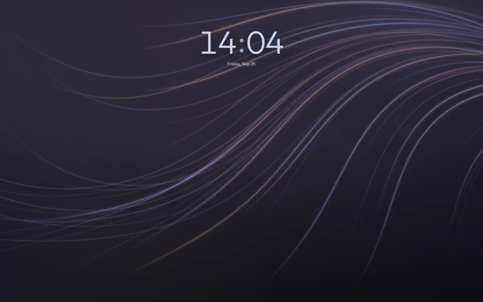
Silk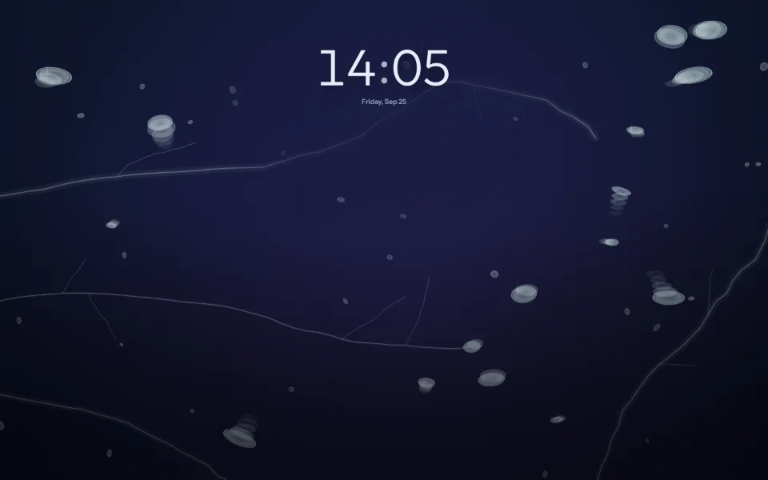
Baikal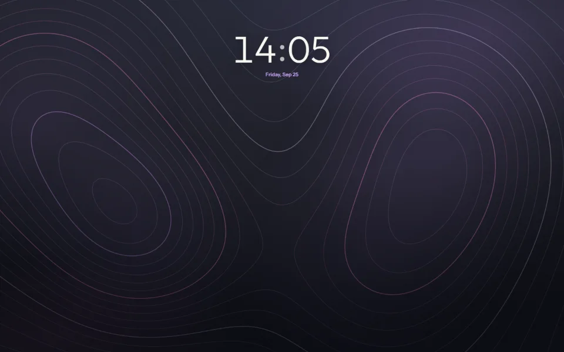
Contour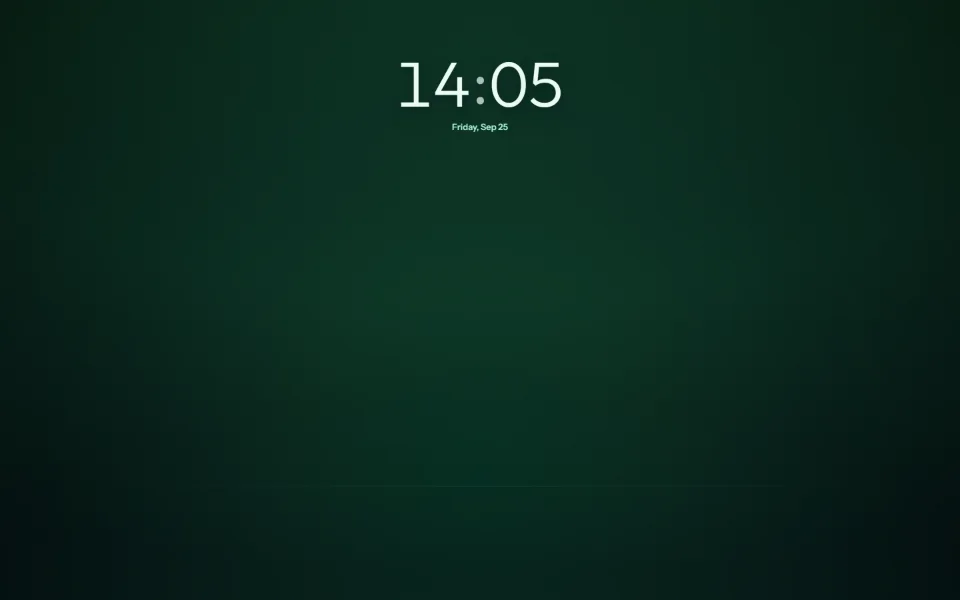
Fjord
Search and commands
The box uses the search engine set in Chrome. It also does math, suggests your bookmarks and takes commands after >, such as theme nord.
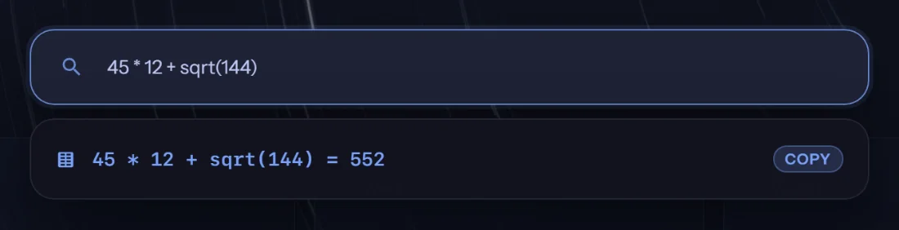
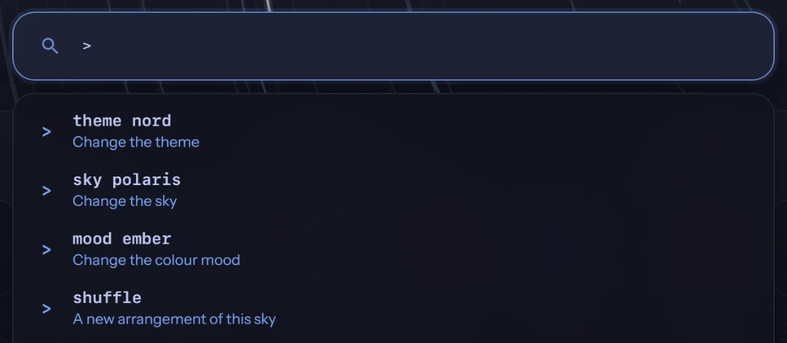
sign, such as theme nord and move YouTube to Daily.">Icons by brand name
Press Search to find a brand icon from Iconify's Simple Icons set. The one you pick is saved on your device. You can also use a site's favicon, an image link, a file or a letter.
Dark logos are adjusted on dark themes so you can see them.
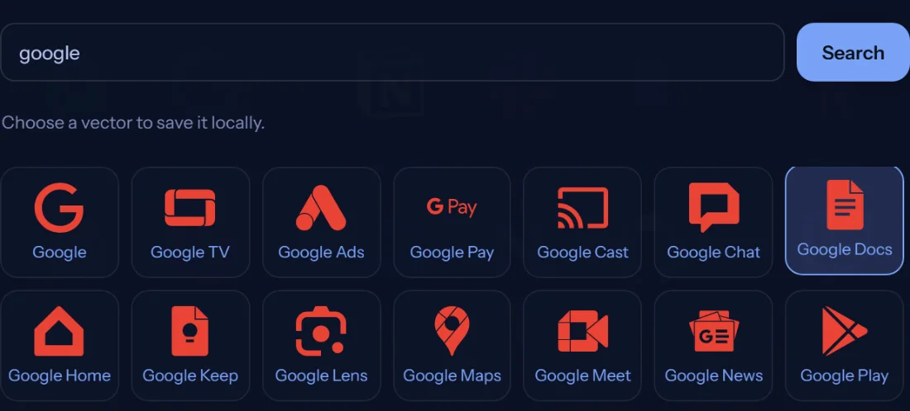
21 themes
There are 11 dark and 10 light ones. Each also recolours the background, so Gruvbox gets an amber sky and OLED Obsidian stays black. If none of them fit, make your own from three colours.
Text stays readable on every background, your own wallpaper included.


Also
- One page fit puts the whole board on one screen, with nothing to scroll.
- A folder can mirror one of your Chrome bookmark folders, read only.
- Import bookmarks from any browser as HTML. Export everything as HTML or JSON.
- Share a look as one line of text or as a picture.
- English, Russian, Spanish, German, French, Japanese, Chinese and Turkish.
- Works in Chrome, Edge, Brave and other Chromium browsers.
Privacy
Your bookmarks and settings stay on your device. There's no account or analytics, and the extension loads no remote code.
Chrome sends searches to your chosen engine when you press Enter. Brand icon search contacts Iconify only after you press Search. Pasted image links can also load online.
Install Nordlys
Get it free from the Chrome Web Store. It works in Chrome, Edge, Brave and other Chromium browsers.
From source: unzip it, open chrome://extensions, turn on Developer mode, then Load unpacked and pick the folder.